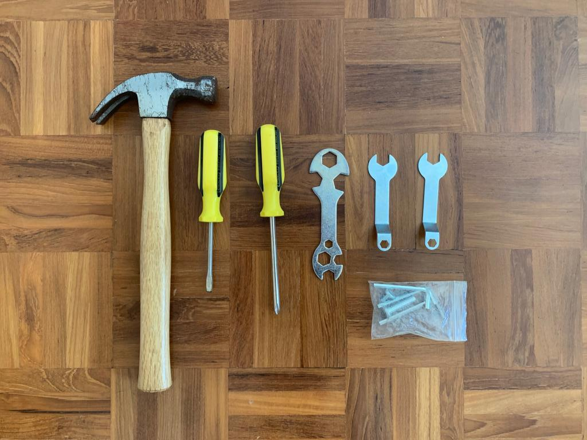
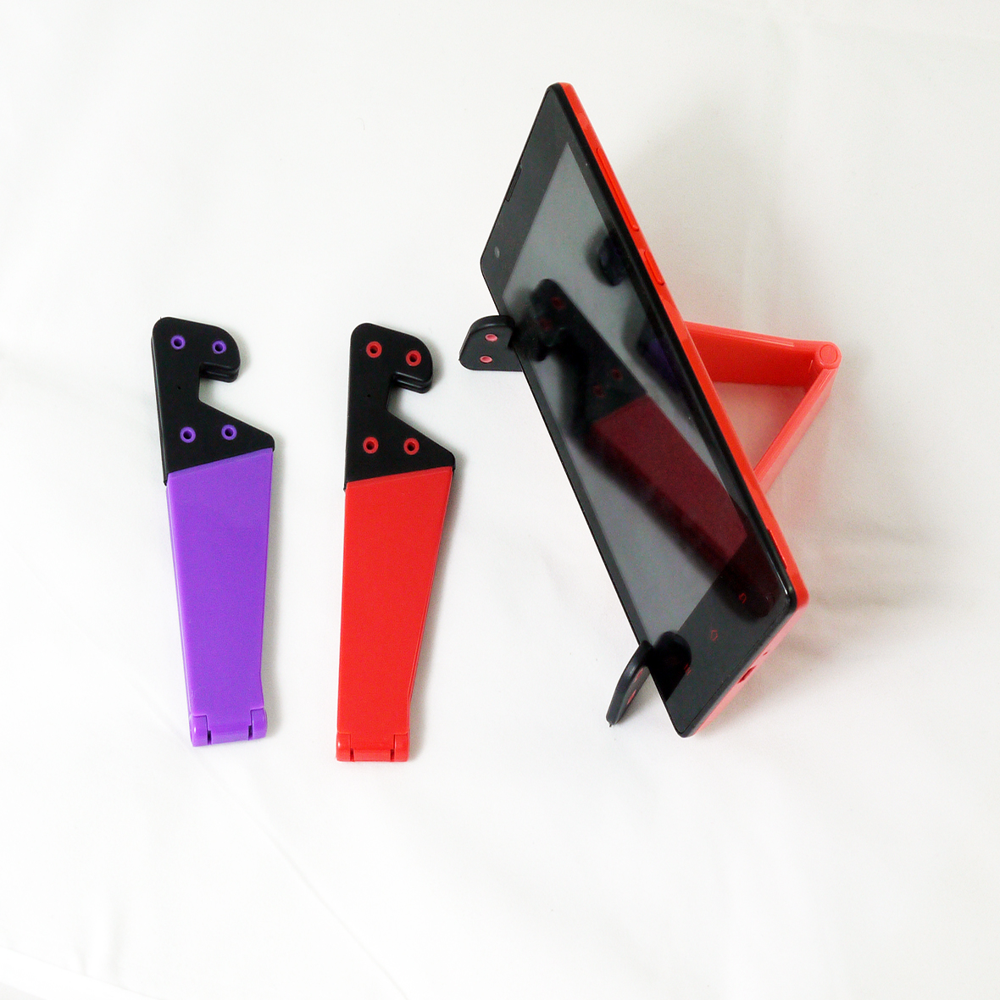

Assignment 2 Prototyping
My 'essential' tools:
|  |
|
For this assignment I decided to make a portable handphone holder that I can put in my backpack.
|  |
|

|
Sketch for my handphone stand: For my 1st attempt, I decided to just guess the measurements based on what I thought would work, casuing the area at which the phone is supposed to lean on to be too tight. So for my second attempt, I decided to add one more cm to allow for more space. Slits were going to be made one on top and one on the bottom in order for them to fit together. |

|


|
Hero shots:After the adjustments for the second attempt, the phone stand was usuable but not very reliable. An improvements that can be made would be to increase the height for the slant for better support for the back of the phone. |